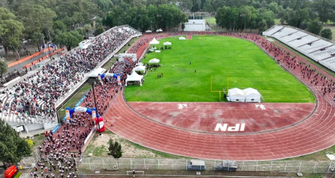
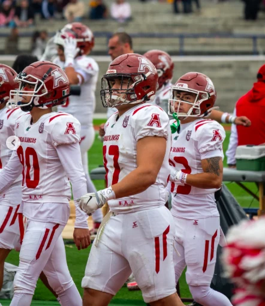
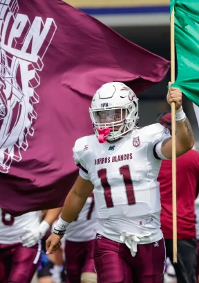

Roma nació de un amor y de una herida. Amor por una colina, por una ciudad que apenas era un sueño de barro y murallas bajas; herida porque dos hermanos, criados por la misma loba, no pudieron compartirla. Rómulo levantó el muro, Remo lo cruzó de un salto, y la leyenda cuenta que ahí empezó todo. Desde entonces sabemos que no hay batalla más feroz que la que se libra entre quienes llevan la misma sangre. Este sábado, en el Wilfrido Massieu, vuelve a escribirse esa historia con cascos, guinda y blanco: Burros y Águilas, dos hermanos del mismo Politécnico, otra vez frente a frente por una sola ciudad.

El sábado 24 de octubre, la Guerra Civil escribirá un nuevo capítulo en su historia. Tendremos un juego que implica orgullo, rivalidad, pasión, historia, unión, legado e incluso la lucha por un boleto a la postemporada.
De un lado, las Águilas Blancas (2-4) llegan con tres semanas de terror sin conocer la victoria; un equipo con un roster conformado en su mayoría por novatos, pero con mucha calidad. Del otro, los Burros Blancos (3-4) son el lado opuesto de la moneda, con un equipo en el que la mayoría de sus estrellas viven su último año de elegibilidad en Liga Mayor y que, pese a ello, ha conseguido victorias importantes ante rivales complicados. Como el golpe de orgullo es necesario para ambos, el triunfo se vuelve una obsesión.
Claves del partido
Pese a la inconsistencia en el nivel general de los volátiles, el regreso de Patricio Fóster, tras una suspensión de dos juegos, es aire fresco para una ofensiva a la que le ha costado sumar puntos en las segundas mitades de casi todos sus partidos.
Frente a UDLAP, pusieron 21 puntos en el primer tramo del juego y únicamente 7 más en el desenlace; ante UVM, se fueron arriba 13-10 al medio tiempo y en la segunda mitad solo pudieron anotar 3 puntos más; la historia se repitió frente a Anáhuac Norte, donde al descanso ganaban 28-13 y no lograron anotar en la segunda mitad. Este tipo de detalles, con una tabla general tan peleada, son los que definen el futuro de las aspiraciones de cada equipo.
El estado físico del QB titular de las blancas, Max Delgadillo, era una incógnita tras su lesión muscular de hace dos semanas, pero, de acuerdo con nuestras fuentes, está listo para disputar el encuentro del sábado. Es primordial que la sintonía entre el número 17 y sus receptores principales (Axel Aguilar, Patricio Foster y Emiliano Bautista) sea la mejor posible, sin dejar de lado el ataque terrestre comandado por Obed Hurtado.

Con Burros Blancos, el punto importante parte de la posición de QB. Independientemente de si es Javier López o Aldo Herrera, la experiencia de ambos es clave para que la ofensiva pueda progresar, sobre todo con su mejor arma aérea, Alan Rivera, quien ha producido 334 yardas por aire en lo que va de la temporada. Y, en realidad, el factor X podría ser la producción por tierra de cualquiera de los dos quarterbacks, en jugadas diseñadas especialmente para eso o con RPO, sin olvidar a su corredor titular, Ricardo Muñoz, quien es la válvula de escape en cada una de las series ofensivas del equipo.

En esta temporada, Burros también ha caído en cierto patrón de inestabilidad, con partidos de buenas ejecuciones, como frente a la UDLAP y al Tec CCM en las semanas 3 y 6, respectivamente, pero también con días complicados, como en las semanas 4, 5 y 7, cuando enfrentaron al Tec Puebla, a Anáhuac Norte y al Tec Monterrey, sobre todo en la fase defensiva, especialmente en las coberturas del perímetro. También es un patrón que la ofensiva del equipo ha tardado en carburar en los últimos cuatro juegos; sus mejores ejecuciones han llegado en las segundas mitades de cada encuentro.
Defensivamente tienen muchas similitudes, tanto en lo positivo como en lo negativo. Águilas Blancas es la quinta mejor defensa contra el ataque terrestre, mientras que Burros Blancos es la sexta. En la parte aérea, los de Santo Tomás se ubican entre las seis mejores y los de Zacatenco ocupan el lugar doce de catorce en toda la liga.
En un partido con expectativas tan cerradas y que puede definirse por detalles mínimos, los equipos especiales siempre marcan la diferencia. Con las Blancas, tanto el pateador de despeje, Arturo Meza, como el pateador de lugar, Matías Vargas, han sido clave en casi todos los juegos, independientemente del resultado. Meza le ha facilitado el trabajo a la defensiva en muchas ocasiones con buenos despejes, mientras que Vargas es el pateador más eficiente en puntos extra, algo que hoy, en casi todos los equipos de los 14 Grandes, es un punto por mejorar.
Con los Blancos, Aldo Herrera, como pateador de despeje, es uno de los más eficientes en toda la liga, y Mixel Franco, pateador de lugar, también suele ser garantía gracias a su veteranía y experiencia con el equipo a la hora de ejecutar los puntos extra y los goles de campo.
Al final, quienes den mejor protección y ejecución a sus equipos especiales podrán acercarse más a la victoria.
La Guerra Civil no se gana con historia ni con récords: se gana con ejecución. Quien falle en lo básico lo pagará caro, porque al otro lado hay un hermano que sabe exactamente dónde pegar. Cuando termine el sábado, solo uno saldrá del Wilfrido Massieu con la frente en alto y las aspiraciones de postemporada más vivas que nunca.